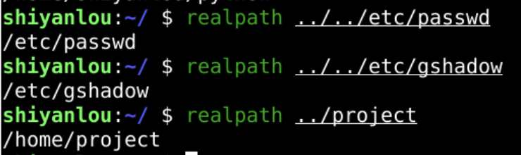
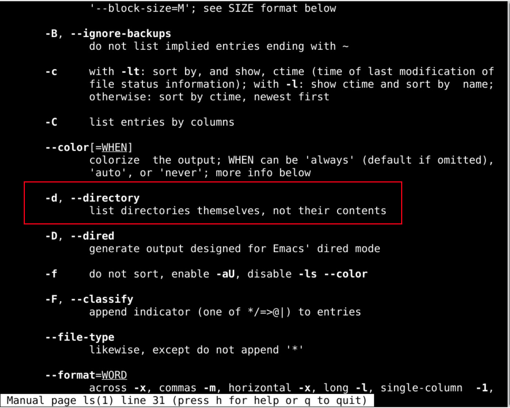
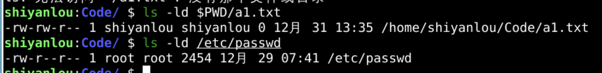
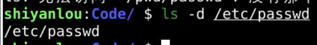
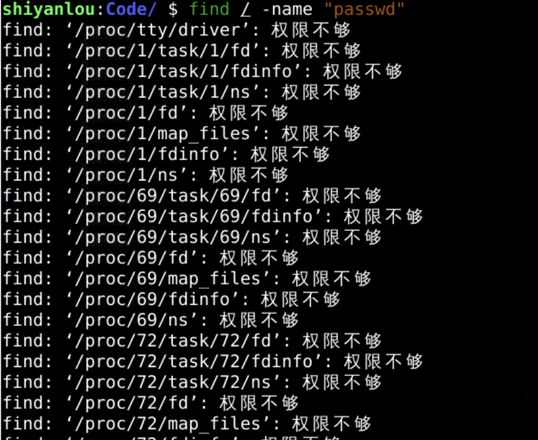
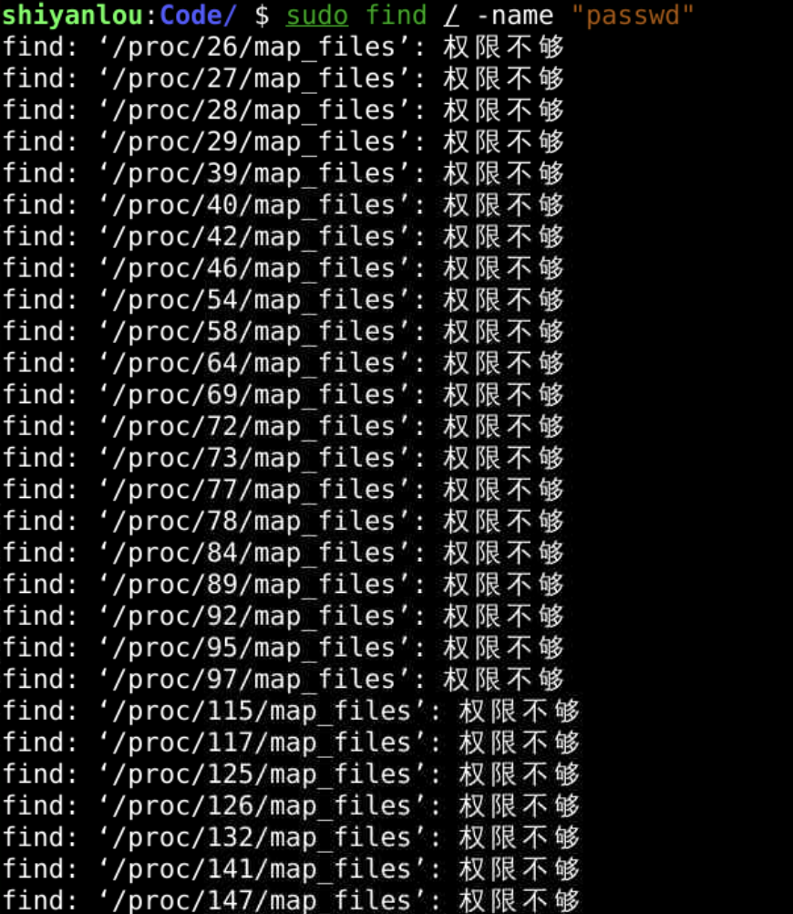
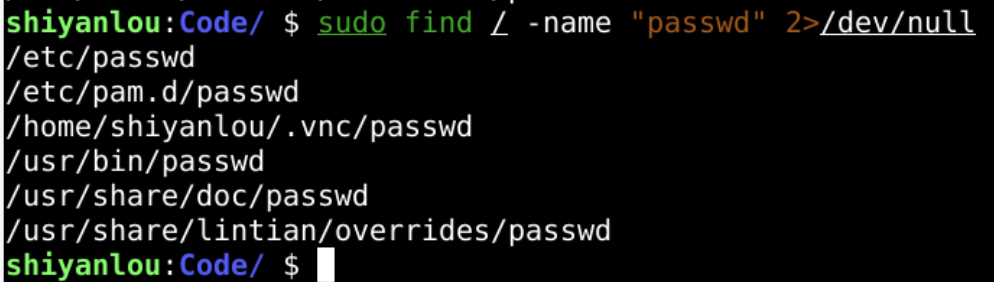
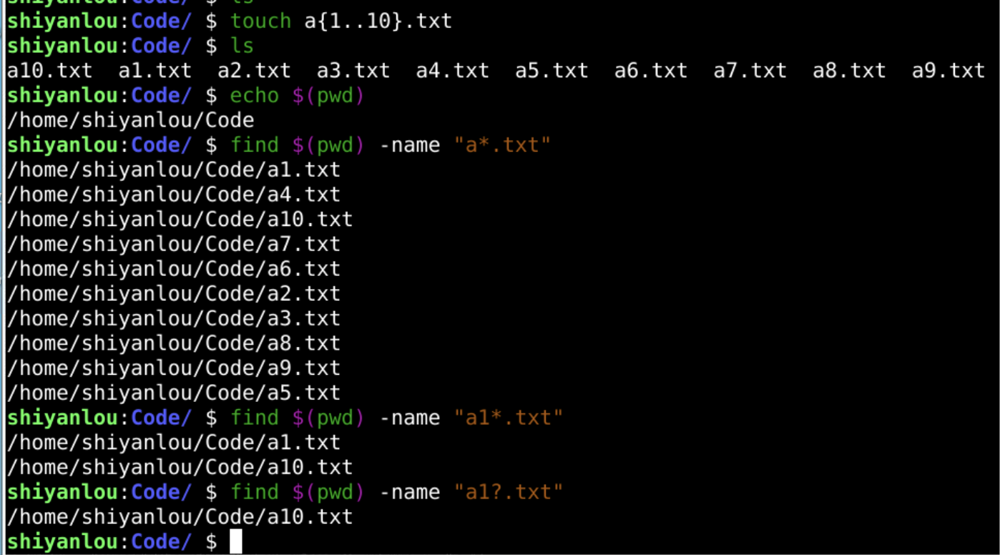
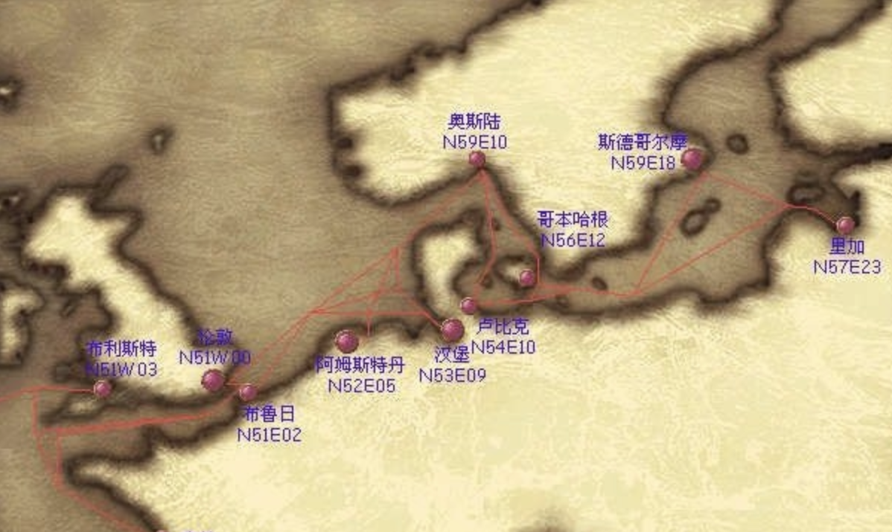

目录跳转
回忆
- 上次我们研究了cd
- 也就是chdir
- 可以改变当前路径(pwd)
- cd 是一个内建的命令
- 可以在linux内核(kernel)找到相关的实现

- 相对路径有点抽象
- 可以将相对路径
- 转化为绝对路径吗？🤔
realpath

- 确实可以得到文件的绝对路径
- 可以将绝对路径和文件名合并吗？
ls -ld /path/a.txt

- 好像这个 -d 参数可以

- 如果只要路径和文件名

- 不过有的时候我不知道passwd的位置怎么办呢？
find 命令
- find / -name "passwd"
- 在根下(/)
- 查找名为passwd的文件

- 权限不够
sudo提权
- 权限依然不够

- 我不想看到这些error信息
跳过error
- 只输出标准输出流(1)
- 将错误输出(2) 重定向到 黑洞 (/dev/null)

- 有的时候不清楚文件名
- 可以用模糊查询吗？
模糊查询
- 先建环境

- 通配符 2 种
-
- 0到任意多个任意字符
- ?
- 1个任意字符
-
总结🤔
- 这次研究了
- realpath
- 可以将相对路径输出为绝对路径
- find
- 可以根据文件名来查询文件
- 通配符有两个
-
- ?
-
- realpath
- 路径好多好复杂
- 可以把曾经进入过的路径记录下来吗？

- 下次再说👋